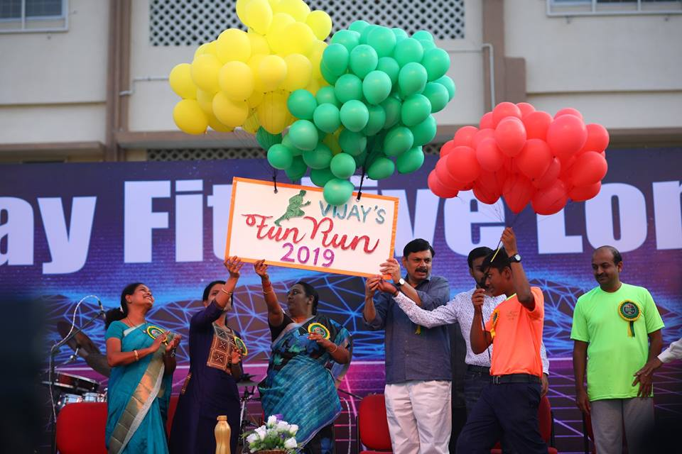

“Road safety is a state of mind, accident is an absence of mind.”
Our Vijay Matric Junior Red Cross and Scout students are observing the Road safety week from 4th Feb at Krishnagiri under the guidance of Traffic Police by regulating traffic at the junctions near the bus stand, near flyover and other heavy traffic zones.
Their prime objective is to impress the traffic rules like wearing seat belts, helmets upon the motorists and other vehicle drivers. In addition they shall distribute pamphlets and display placards to trigger awareness among public.